set.seed(551)n_sim <-10000n <-10true_mu <-0true_sigma <-1# Simulate both Z and T statisticssim_data <-tibble(Z =replicate(n_sim, { x <-rnorm(n, true_mu, true_sigma) (mean(x) - true_mu) / (true_sigma /sqrt(n)) }),T =replicate(n_sim, { x <-rnorm(n, true_mu, true_sigma) (mean(x) - true_mu) / (sd(x) /sqrt(n)) })) |>pivot_longer(everything(), names_to ="statistic", values_to ="value")sim_data |>ggplot(aes(x = value, fill = statistic)) +geom_histogram(bins =50, alpha =0.6, position ="identity") +scale_fill_manual(values =c("Z"="steelblue", "T"="coral"),labels =c(T =expression(T == (bar(X) - mu) / (S /sqrt(n))),Z =expression(Z == (bar(X) - mu) / (sigma /sqrt(n))) ) ) +labs(x ="Value", y ="Count", title ="Comparing Z and T Statistics (n = 10)",fill ="Statistic") +theme_minimal(base_size =18)
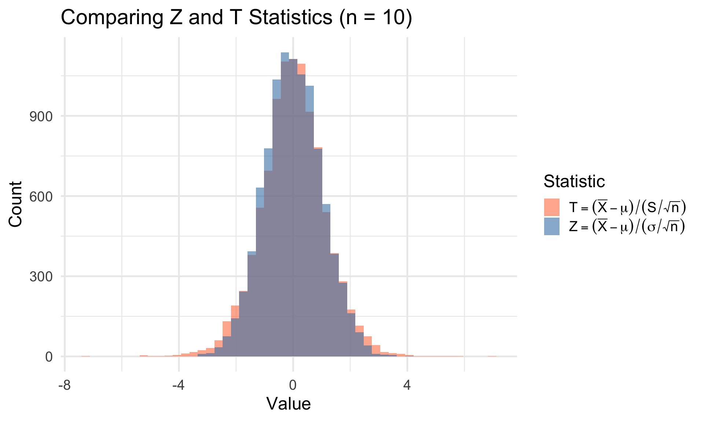
Key insight: T has more variability because both \(\bar{X}\) and \(S\) are random!
The t Distribution
Code
tibble(x =seq(-4, 4, by =0.01)) |>mutate(normal =dnorm(x),t_5 =dt(x, df =5),t_15 =dt(x, df =15),t_30 =dt(x, df =30) ) |>pivot_longer(-x, names_to ="distribution", values_to ="density") |>mutate(distribution =factor(distribution, levels =c("normal", "t_30", "t_15", "t_5"),labels =c("N(0,1)", "t(df=30)", "t(df=15)", "t(df=5)"))) |>ggplot(aes(x = x, y = density, color = distribution)) +geom_line(linewidth =1.2) +scale_color_manual(values =c("black", "#3498db", "#e74c3c", "#27ae60")) +labs(x ="x", y ="Density", color ="Distribution",title ="Student's t Distribution vs. Standard Normal") +theme_minimal(base_size =18) +theme(legend.position ="right")
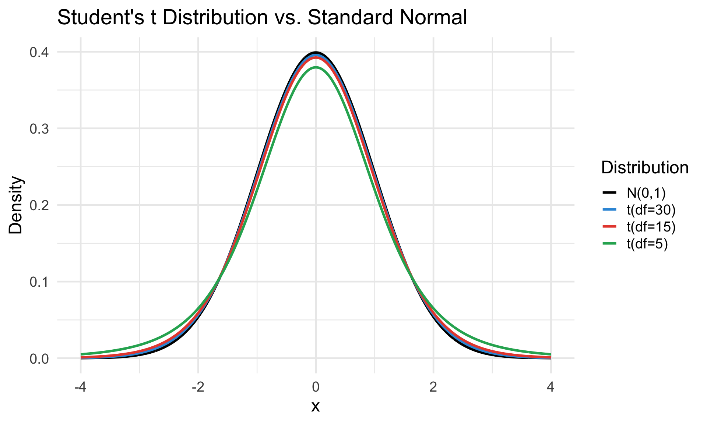
The t distribution has heavier tails than the normal — accounting for extra uncertainty from estimating \(\sigma\).
Student’s t Distribution
Gosset’s Theorem
If \(X_1, \ldots, X_n \stackrel{iid}{\sim} N(\mu, \sigma^2)\), then: \[T = \frac{\bar{X} - \mu}{S/\sqrt{n}} \sim t_{n-1}\] where \(t_{n-1}\) denotes the t distribution with \(n-1\)degrees of freedom.
Key properties of \(t_\nu\):
Symmetric around 0
Heavier tails than \(N(0, 1)\)
As \(\nu \to \infty\), \(t_\nu \to N(0, 1)\)
Simulating the t Distribution (Chihara 7.1.2)
# Verify that (X̄ - μ)/(S/√n) follows t distributionset.seed(551)n <-15t_stats <-replicate(10000, { x <-rnorm(n, mean =25, sd =7) (mean(x) -25) / (sd(x) /sqrt(n))})# Compare to theoretical t distributionqqplot(qt(ppoints(10000), df = n -1), t_stats, main ="Q-Q Plot: Simulated vs. t(14)", xlab ="Theoretical t(14)", ylab ="Simulated")abline(0, 1, col ="red", lwd =2)
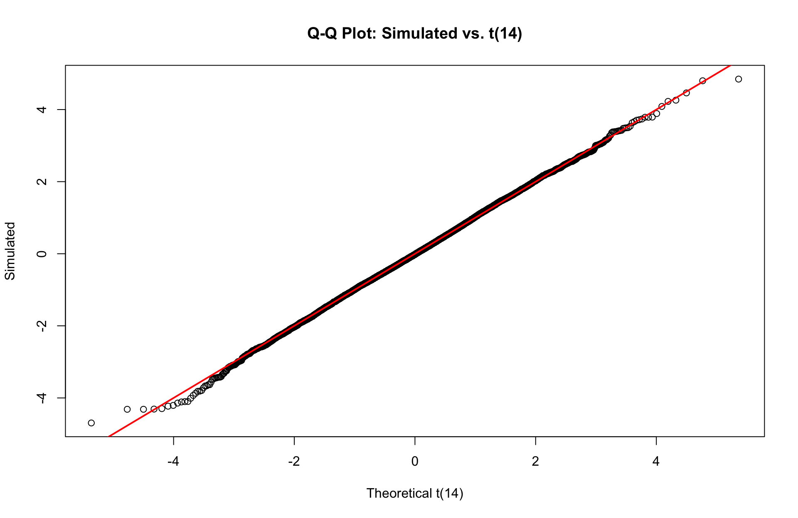
Why \((n-1)\) Degrees of Freedom?
The sample variance involves: \[S^2 = \frac{1}{n-1}\sum_{i=1}^n(X_i - \bar{X})^2\]
Since \(\sum(X_i - \bar{X}) = 0\), knowing any \(n-1\) deviations determines the last one.
Intuition: We “use up” one degree of freedom by estimating \(\mu\) with \(\bar{X}\).
The One-Sample t Interval
t Confidence Interval for Normal Mean (\(\sigma\) Unknown)
If \(X_1, \ldots, X_n \sim N(\mu, \sigma^2)\), a \(100(1-\alpha)\%\) CI for \(\mu\) is: \[\bar{x} \pm t_{\alpha/2, n-1} \cdot \frac{s}{\sqrt{n}}\] where \(t_{\alpha/2, n-1}\) is the critical value with \(P(T > t_{\alpha/2, n-1}) = \alpha/2\) for \(T \sim t_{n-1}\).
The quantity \(s/\sqrt{n}\) is called the standard error of the mean (SEM or SE).
t Critical Values
# Compare z and t critical values for 95% CIz_crit <-qnorm(0.975)df_values <-c(5, 10, 20, 30, 50, 100, Inf)t_crits <-qt(0.975, df = df_values)tibble(df =c("5", "10", "20", "30", "50", "100", "∞ (z)"),t_critical =round(c(head(t_crits, -1), z_crit), 3))
The t interval assumes normally distributed data. Always check!
par(mfrow =c(1, 2))hist(odometer, main ="Histogram", xlab ="Odometer (miles)", col ="lightblue")qqnorm(odometer, main ="Normal Q-Q Plot", pch =19)qqline(odometer, col ="red", lwd =2)
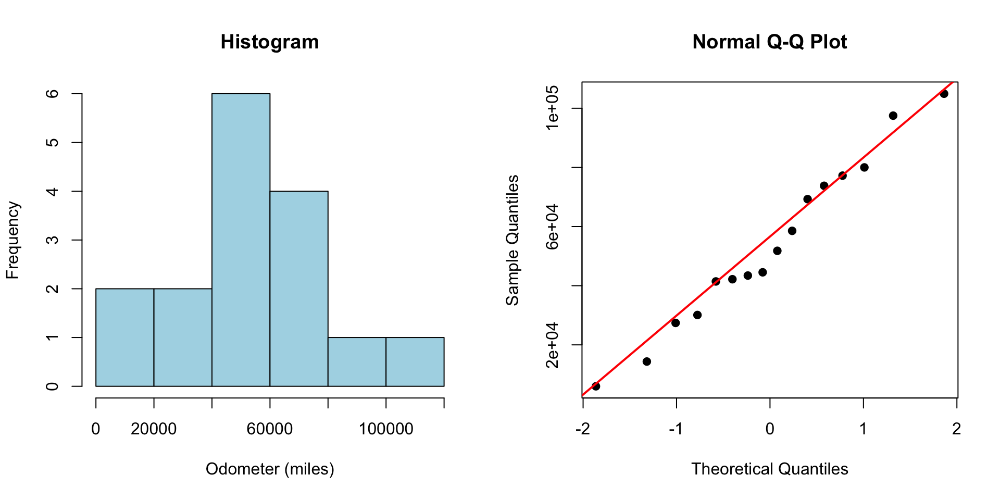
The Q-Q plot looks reasonably linear — normality assumption is plausible.
Medical Example: Systolic Blood Pressure
A clinical study measures systolic blood pressure in \(n = 25\) patients after a new treatment:
# The easy way to compute t confidence intervalst.test(bp, conf.level =0.95)
One Sample t-test
data: bp
t = 140.51, df = 24, p-value < 2.2e-16
alternative hypothesis: true mean is not equal to 0
95 percent confidence interval:
124.3463 128.0537
sample estimates:
mean of x
126.2
Note: R’s t.test() also performs a hypothesis test (which we’ll cover later).
Using broom to Tidy t.test() Output
The broom package provides a convenient way to extract results as a tibble:
Consistent interface across many statistical functions
Great for automated reporting and combining results
Medical Example: Stress and Cortisol (Devore 8.37)
Medical students’ serum cortisol levels were measured at the beginning and end of semester. For \(n = 41\) students, the mean difference (end - beginning) was \(\bar{d} = 2.08\) with \(s_d = 7.88\).
Find a 95% lower confidence bound for the population mean change:
n <-41dbar <-2.08s <-7.88t_alpha <-qt(0.95, df = n -1) # One-sided!se <- s /sqrt(n)lower_bound <- dbar - t_alpha * secat("95% lower confidence bound:", round(lower_bound, 2), "\n")
95% lower confidence bound: 0.01
cat("Is the mean change necessarily positive? ", ifelse(lower_bound >0, "Yes", "No"))
Is the mean change necessarily positive? Yes
When Can We Trust the t-Interval?
Guidelines for t-Interval Validity
Large samples (n ≥ 30-40): t-interval is robust to non-normality (by CLT)
Moderate samples (15-30): Check for severe skewness or outliers
Small samples (n < 15): Normality is crucial; use Q-Q plots
Outliers: Can severely affect \(\bar{x}\) and \(s\); consider alternatives
Alternatives for non-normal data:
Bootstrap confidence intervals (Lesson 9)
Non-parametric methods (median-based)
Transformations (log, square root)
Your Turn: Practice Problem
Exercise: A study of \(n = 20\) hospital ICU stays yields \(\bar{x} = 4.2\) days with \(s = 1.8\) days.
Calculate a 95% CI for mean ICU stay
Calculate a 90% CI — how does it compare?
What assumptions are we making?
n <-20; xbar <-4.2; s <-1.8# 95% CIt95 <-qt(0.975, df = n -1)ci95 <- xbar +c(-1, 1) * t95 * s /sqrt(n)# 90% CI t90 <-qt(0.95, df = n -1)ci90 <- xbar +c(-1, 1) * t90 * s /sqrt(n)cat("95% CI:", round(ci95, 2), "\n")
95% CI: 3.36 5.04
cat("90% CI:", round(ci90, 2))
90% CI: 3.5 4.9
Confidence Intervals for Proportions
The Setup
Situation: We observe \(X\) successes in \(n\) independent Bernoulli trials.
\(X \sim \text{Binomial}(n, p)\)
Point estimate: \(\hat{p} = X/n\)
Examples in medical research:
Proportion of patients responding to treatment
Proportion experiencing adverse events
Disease prevalence in a population
Sensitivity/specificity of diagnostic tests
Deriving the MLE for Bernoulli (Review)
Let \(X_1, \ldots, X_n \stackrel{iid}{\sim} \text{Bernoulli}(p)\) where \(P(X_i = 1) = p\).
Since \(\sum x_i \geq 0\) and \(n - \sum x_i \geq 0\), we have \(\ell''(p) \leq 0\) for all \(p \in (0,1)\).
When \(0 < \hat{p} < 1\): \(\ell''(\hat{p}) < 0\) ✓ → confirms \(\hat{p}\) is a maximum.
The General Wald Interval
Wald Confidence Interval (General Definition)
For an MLE \(\hat{\theta}\) with large \(n\), the Wald interval is based on the asymptotic normality of MLEs: \[\hat{\theta} \dot{\sim} N\left(\theta, \frac{1}{I_n(\theta)}\right)\]
A \(100(1-\alpha)\%\) Wald CI is: \[\hat{\theta} \pm z_{\alpha/2} \cdot \widehat{SE}(\hat{\theta})\] where \(\widehat{SE}\) is an estimate of the standard error, typically using \(\hat{\theta}\) in place of \(\theta\).
Key idea: Replace unknown parameters in the standard error with their MLEs.
Why the Wald Interval Works: Asymptotic Theory
From Lesson 4, we know the MLE has these asymptotic properties:
The Wald pivot for a proportion is: \[W = \frac{\hat{p} - p}{\widehat{SE}(\hat{p})} = \frac{\hat{p} - p}{\sqrt{\hat{p}(1-\hat{p})/n}}\] where we estimate the standard error by plugging in \(\hat{p}\) for the unknown \(p\).
Large sample approximation: For large \(n\), \[W = \frac{\hat{p} - p}{\sqrt{\hat{p}(1-\hat{p})/n}} \; \dot{\sim} \; N(0, 1)\]
This approximation is what allows us to construct confidence intervals using \(z_{\alpha/2}\).
Visualizing Convergence to N(0,1): Density Comparison
Code
set.seed(551)p_true <-0.3n_values <-c(10, 30, 100, 500)n_sim <-10000# Simulate Wald pivot for various sample sizessim_wald_pivot <-function(n, p, n_sim) {replicate(n_sim, { x <-rbinom(1, n, p) p_hat <- x / nif (p_hat >0& p_hat <1) { (p_hat - p) /sqrt(p_hat * (1- p_hat) / n) } else {NA } })}# Generate data for all sample sizespivot_data <-map_dfr(n_values, ~{ pivots <-sim_wald_pivot(.x, p_true, n_sim)tibble(n = .x,n_label =paste0("n = ", .x),pivot = pivots[!is.na(pivots)])})# Overlaid density plotspivot_data |>mutate(n_label =factor(n_label, levels =paste0("n = ", n_values))) |>ggplot(aes(x = pivot)) +geom_histogram(aes(y =after_stat(density)), bins =60, fill ="steelblue", alpha =0.6, color ="white") +stat_function(fun = dnorm, color ="red", linewidth =1.5) +facet_wrap(~n_label, nrow =1) +coord_cartesian(xlim =c(-4, 4)) +labs(x ="Wald Pivot Value",y ="Density",title ="Wald Pivot Distribution Converges to N(0,1)",subtitle ="Blue histogram: 10,000 simulated pivots | Red curve: N(0,1) density | True p = 0.3") +theme_minimal(base_size =16)
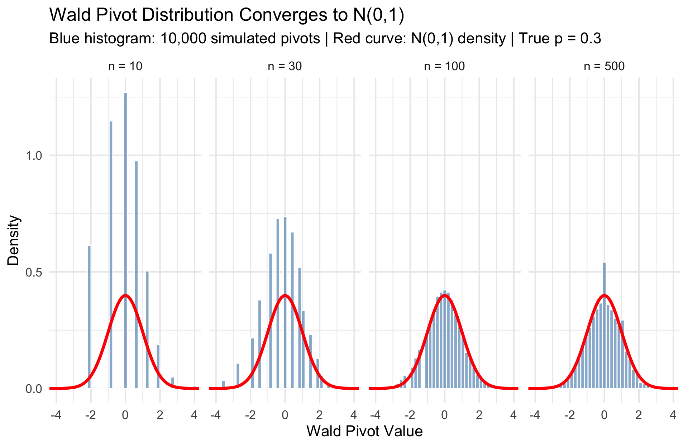
As \(n\) increases, the histogram of simulated Wald pivots matches the red N(0,1) curve more closely.
Convergence in the Tails (What Matters for CIs)
Code
# Focus on the tails - this is what matters for confidence intervalspivot_data |>mutate(n_label =factor(n_label, levels =paste0("n = ", n_values))) |>ggplot(aes(x = pivot, color = n_label)) +stat_ecdf(linewidth =1.2) +stat_function(fun = pnorm, color ="black", linewidth =1.5, linetype ="dashed") +# Add reference lines at critical valuesgeom_vline(xintercept =c(-1.96, 1.96), linetype ="dotted", color ="gray40") +geom_hline(yintercept =c(0.025, 0.975), linetype ="dotted", color ="gray40") +annotate("text", x =-2.8, y =0.08, label ="2.5%", size =4) +annotate("text", x =2.8, y =0.92, label ="97.5%", size =4) +scale_color_brewer(palette ="Set1") +coord_cartesian(xlim =c(-4, 4)) +labs(x ="Wald Pivot Value",y ="Cumulative Probability",title ="CDF Comparison: Focus on the Tails",subtitle ="Dotted lines mark ±1.96 (95% CI critical values) | Black dashed: N(0,1)",color ="Sample Size") +theme_minimal(base_size =18) +theme(legend.position ="right")
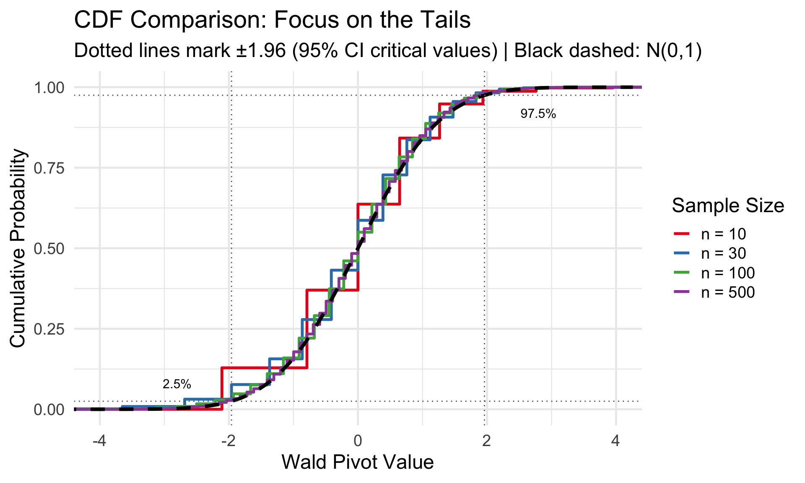
The tails (where we find critical values for CIs) converge more slowly than the center.
set.seed(551)# Calculate KS distance for many sample sizesn_sequence <-c(seq(10, 100, by =10), seq(120, 200, by =20), seq(250, 500, by =50))n_sim <-3000ks_results <-map_dfr(n_sequence, function(n) { pivots <-sim_wald_pivot(n, p_true, n_sim) pivots <- pivots[!is.na(pivots)] ks_stat <-ks.test(pivots, "pnorm")$statistictibble(n = n, ks_distance = ks_stat)})ks_results |>ggplot(aes(x = n, y = ks_distance)) +geom_line(linewidth =1, color ="steelblue") +geom_point(size =2.5, color ="steelblue") +geom_hline(yintercept =0, linetype ="dashed", color ="gray50") +labs(x ="Sample Size (n)",y ="Kolmogorov-Smirnov Distance from N(0,1)",title ="Wald Pivot Approaches N(0,1) as n Increases",subtitle ="KS distance measures maximum gap between empirical and theoretical CDF") +theme_minimal(base_size =18)
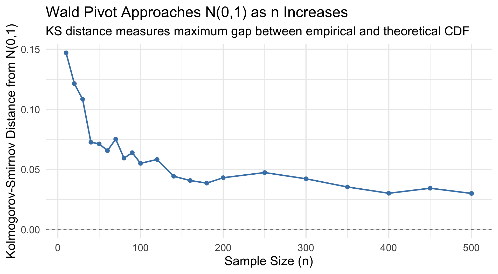
The KS distance (maximum difference between ECDFs) shrinks toward 0, confirming convergence in distribution.
Convergence: Critical Values for 95% CI
Code
# Focus on the percentiles that matter for 95% CIs: 2.5% and 97.5%set.seed(551)critical_comparison <-map_dfr(n_sequence, function(n) { pivots <-sim_wald_pivot(n, p_true, n_sim) pivots <- pivots[!is.na(pivots)]tibble(n = n,`Lower (2.5%)`=quantile(pivots, 0.025),`Upper (97.5%)`=quantile(pivots, 0.975) )}) |>pivot_longer(-n, names_to ="Percentile", values_to ="Empirical")# Add theoretical valuestheoretical_vals <-tibble(Percentile =c("Lower (2.5%)", "Upper (97.5%)"),Theoretical =c(qnorm(0.025), qnorm(0.975)))critical_comparison |>left_join(theoretical_vals, by ="Percentile") |>ggplot(aes(x = n, y = Empirical, color = Percentile)) +geom_line(linewidth =1.2) +geom_point(size =2) +geom_hline(aes(yintercept = Theoretical, color = Percentile), linetype ="dashed", linewidth =1) +scale_color_manual(values =c("Lower (2.5%)"="#e74c3c", "Upper (97.5%)"="#3498db")) +labs(x ="Sample Size (n)",y ="Critical Value",title ="Empirical Critical Values Converge to ±1.96",subtitle ="Solid lines: simulated | Dashed lines: theoretical N(0,1) values") +theme_minimal(base_size =18) +theme(legend.position ="right")
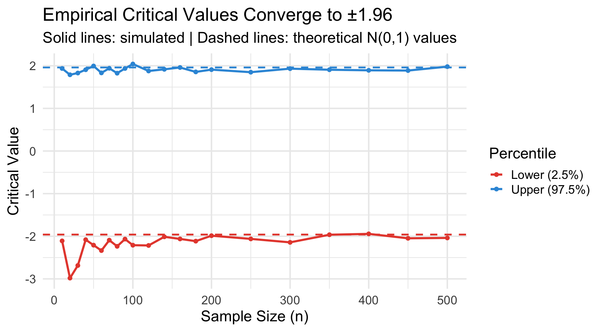
For 95% CIs, we need the 2.5th and 97.5th percentiles to equal ±1.96. This happens as \(n \to \infty\).
The Exact Pivot for Proportions
If we knew \(p\), we could use this exact pivot: \[Z = \frac{\hat{p} - p}{\sqrt{p(1-p)/n}} \xrightarrow{d} N(0, 1)\]
Problem: The standard error \(\sqrt{p(1-p)/n}\) depends on the unknown \(p\)!
Wald solution: Replace \(p\) with \(\hat{p}\) in the standard error: \[Z^* = \frac{\hat{p} - p}{\sqrt{\hat{p}(1-\hat{p})/n}}\]
But is \(Z^*\) still approximately \(N(0,1)\)?
Why Plugging In \(\hat{p}\) Works: Slutsky’s Theorem
We can rewrite \(Z^*\) as: \[Z^* = \frac{\hat{p} - p}{\sqrt{\hat{p}(1-\hat{p})/n}} = \underbrace{\frac{\hat{p} - p}{\sqrt{p(1-p)/n}}}_{\xrightarrow{d} N(0,1)} \cdot \underbrace{\frac{\sqrt{p(1-p)}}{\sqrt{\hat{p}(1-\hat{p})}}}_{\xrightarrow{P} 1}\]
Slutsky’s Theorem: If \(X_n \xrightarrow{d} X\) and \(Y_n \xrightarrow{P} c\) (a constant), then: \[X_n \cdot Y_n \xrightarrow{d} c \cdot X\]
Since \(\hat{p} \xrightarrow{P} p\) (consistency), we have: \[\frac{\sqrt{p(1-p)}}{\sqrt{\hat{p}(1-\hat{p})}} \xrightarrow{P} 1\]
Therefore: \(Z^* \xrightarrow{d} N(0,1)\)
Visualizing the Consistency Argument
Code
set.seed(551)p_true <-0.3n_values <-c(20, 50, 100, 500)sim_ratio <-function(n, p, n_sim =5000) {replicate(n_sim, { x <-rbinom(1, n, p) p_hat <- x/nif (p_hat >0& p_hat <1) {sqrt(p*(1-p)) /sqrt(p_hat*(1-p_hat)) } else {NA } })}ratio_data <-map_dfr(n_values, ~{tibble(n =paste0("n = ", .x), ratio =sim_ratio(.x, p_true))}) |>filter(!is.na(ratio))ratio_data |>ggplot(aes(x = ratio)) +geom_histogram(bins =40, fill ="steelblue", alpha =0.7) +geom_vline(xintercept =1, color ="red", linewidth =1.2, linetype ="dashed") +facet_wrap(~n, scales ="free_y") +labs(x =expression(sqrt(p(1-p)) /sqrt(hat(p)(1-hat(p)))),y ="Count",title ="Ratio of True SE to Estimated SE Concentrates at 1",subtitle ="True p = 0.3") +theme_minimal(base_size =16)
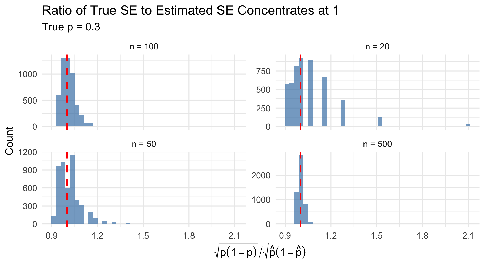
The Wald Interval for Proportions
Using \(Z^* = \frac{\hat{p} - p}{\sqrt{\hat{p}(1-\hat{p})/n}} \approx N(0,1)\) as our pivot:
# Simulate coverage probability for Wald intervalset.seed(551)n_sim <-10000n <-100coverage_wald <-function(p, n, n_sim =10000) {mean(replicate(n_sim, { x <-rbinom(1, n, p) p_hat <- x/n se <-sqrt(p_hat * (1- p_hat) / n) lower <- p_hat -1.96* se upper <- p_hat +1.96* se lower < p & p < upper }))}p_values <-seq(0.05, 0.95, by =0.05)coverage <-sapply(p_values, coverage_wald, n =100)tibble(p = p_values, coverage = coverage) |>ggplot(aes(x = p, y = coverage)) +geom_line(linewidth =1.2, color ="steelblue") +geom_point(size =3, color ="steelblue") +geom_hline(yintercept =0.95, linetype ="dashed", color ="red", linewidth =1) +labs(x ="True Proportion p", y ="Coverage Probability",title ="Coverage Probability of 95% Wald Interval (n = 100)",subtitle ="Dashed line shows nominal 95% level") +theme_minimal(base_size =18) +ylim(0.85, 1)
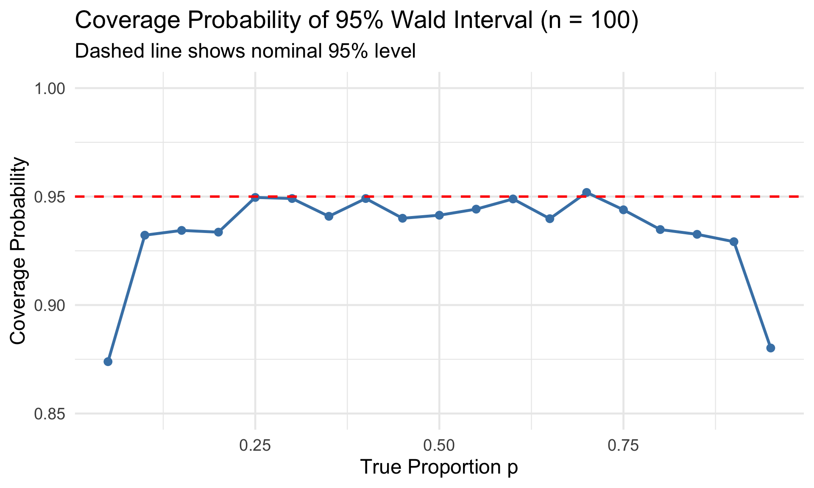
The Wald interval often has coverage below the nominal level!
The Score Interval: A Better Approach
The Score Test Statistic (General Definition)
The score function is the derivative of the log-likelihood: \[U(\theta) = \ell'(\theta) = \frac{d}{d\theta} \ln L(\theta)\]
The score test statistic is: \[Z_{score} = \frac{U(\theta)}{\sqrt{I_n(\theta)}} \xrightarrow{d} N(0,1)\] where \(I_n(\theta)\) is the Fisher information.
Key insight: The score statistic is evaluated at the null/hypothesized parameter value, not at the MLE!
Score Function for Bernoulli
For \(X_1, \ldots, X_n \stackrel{iid}{\sim} \text{Bernoulli}(p)\):
Log-likelihood:\(\ell(p) = X \ln(p) + (n-X)\ln(1-p)\) where \(X = \sum X_i\)
# Score (Wilson) interval in Rprop.test(x =23, n =40, conf.level =0.95, correct =FALSE)
1-sample proportions test without continuity correction
data: 23 out of 40, null probability 0.5
X-squared = 0.9, df = 1, p-value = 0.3428
alternative hypothesis: true p is not equal to 0.5
95 percent confidence interval:
0.4219507 0.7149061
sample estimates:
p
0.575
Using broom with prop.test()
# Tidy output with broomprop.test(x =23, n =40, conf.level =0.95, correct =FALSE) |>tidy() |>select(estimate, conf.low, conf.high, statistic, p.value, method)
The Wald interval gives a negative lower bound — impossible for a proportion!
Example: Super Bowl Viewing (Devore 8.15)
In a sample of 25 students, all 25 said they watched the Super Bowl. What’s a 95% CI for the true proportion?
x <-25; n <-25# Wald gives silly resultp_hat <- x/nse_wald <-sqrt(p_hat * (1-p_hat) / n) # This is 0!cat("Wald 95% CI: (1, 1) — just the point estimate!\n\n")
Wald 95% CI: (1, 1) — just the point estimate!
# Score interval is much betterscore_ci <-prop.test(x, n, conf.level =0.95, correct =FALSE)$conf.intcat("Score 95% CI: (", round(score_ci[1], 3), ",", round(score_ci[2], 3), ")")
Score 95% CI: ( 0.867 , 1 )
Sample Size for Proportions
To achieve a margin of error \(b\) with confidence level \(1 - \alpha\):
An epidemiologist wants to estimate disease prevalence with a margin of error ≤ 3% with 95% confidence.
b <-0.03# margin of errorz <-qnorm(0.975)# Conservative (p = 0.5)n_conservative <- z^2*0.25/ b^2cat("Conservative sample size:", ceiling(n_conservative), "\n")
Conservative sample size: 1068
# If we believe p ≈ 0.10 from prior studiesn_informed <- z^2*0.10*0.90/ b^2cat("Informed sample size (p ≈ 0.10):", ceiling(n_informed))
Informed sample size (p ≈ 0.10): 385
Using prior information can substantially reduce required sample size!
Sample Size: Effect of Assumptions
Code
tibble(p =seq(0.05, 0.95, by =0.01)) |>mutate(n =qnorm(0.975)^2* p * (1-p) /0.03^2) |>ggplot(aes(x = p, y = n)) +geom_line(linewidth =1.2, color ="steelblue") +geom_hline(yintercept =qnorm(0.975)^2*0.25/0.03^2, linetype ="dashed", color ="red") +annotate("text", x =0.8, y =1100, label ="Conservative (p = 0.5)", color ="red", size =5) +labs(x ="Assumed Proportion p", y ="Required Sample Size",title ="Sample Size for 95% CI with Margin ≤ 3%") +theme_minimal(base_size =18)
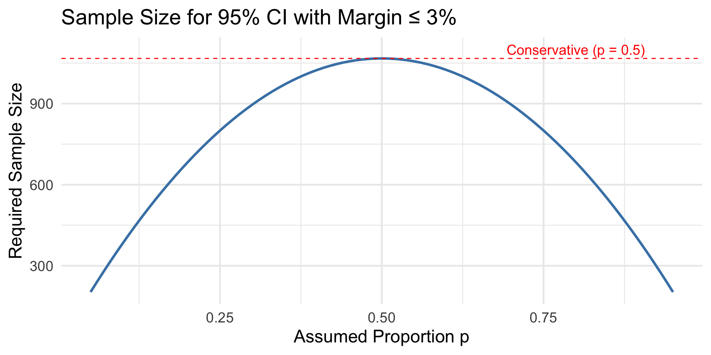
One-Sided Bounds for Proportions
Upper confidence bound (e.g., maximum adverse event rate):
# 12 adverse events in 150 patientsx <-12; n <-150# 95% upper bound using Score methodresult <-prop.test(x, n, conf.level =0.95, alternative ="less", correct =FALSE)cat("Point estimate:", round(x/n *100, 1), "%\n")
Devore, Berk, and Carlton. Modern Mathematical Statistics with Applications (Springer). Chapter 8.1-8.4
Chihara and Hesterberg. Mathematical Statistics with Resampling and R (Wiley). Chapter 7.
Agresti, A. and Coull, B. (1998). Approximate is better than “exact” for interval estimation of binomial proportions. The American Statistician, 52:119-126.